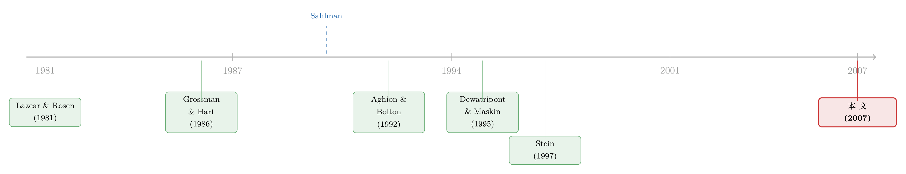

「浅口袋」反而是好事？——把创业者逼进一场抢钱的锦标赛
本文读的是 Inderst, Mueller & Münnich (2007, Review of Financial Studies)：风险投资人 (venture capitalist, VC) 同时给一篮子项目融资时，可以故意让自己「兜里钱不够」，逼着创业者在再融资阶段相互抢夺稀缺资本。这看上去会削弱创业者的谈判地位、从而打击他们的努力动机；但作者证明，恰恰相反——只要「竞争效应」压过「谈判力效应」，把可用资本限制住，反而能把创业者的努力激励调上去。这给 VC 合伙协议里那条「一只基金募完就很难再追加资本」的奇怪条款，提供了一个干净的理论解释。
1 一个反直觉的开场
先讲一个看起来很傻的现象。
风险投资基金募资时，几乎都会主动给自己设限。用 Gompers 和 Lerner (1996) 的话说，「风投机构会限制自己募资的频率，也会限制每只基金的规模」。更奇怪的是，合伙协议里常常写明：一只基金募完之后，普通合伙人 (general partner) 不得为同一家管理人旗下其他基金所投的公司追加共同投资——也就是说，钱一旦募定，就很难再往里加（Sahlman 1990；Fenn, Liang and Prowse 1995）。甚至连「人」都要限制：协议里往往有条款，禁止往一只现成的基金里增添新的普通合伙人。
这就怪了。资本是稀缺而昂贵的资源，VC 投出去十笔有三四笔是要打水漂的——Sahlman (1990) 报告的一项调查里，34.5% 的已投资本最终亏损，另有 30% 只拿到低到中个位数的回报，能拿到 10 倍以上回报的还不到 7%。既然好项目这么稀罕，那当两个项目都被证明值得追加投资时，VC 为什么不干脆多募点钱、把它们统统救活？为什么要把自己的口袋缝小？
这篇文章给出的答案是：这不是疏忽，而是设计。 把口袋缝小，是一种「承诺」——承诺让旗下的项目在再融资那一刻，为了那笔不够分的钱，彼此厮杀。
2 张力在哪里：谈判力 vs. 竞争
要看清这个设计的精妙，得先想清楚它的「副作用」。
风险投资的本质，是分阶段注资 (staging)。VC 保留着「下一轮要不要继续给钱」的权利，这就是 Sahlman (1990) 说的那句名言的核心：「即便企业在经济上还活得下去，一个可信的『撂挑子』威胁，才是创业者与 VC 之间关系的关键。」
现在把场景放到再融资那一刻。如果 VC 的资本充裕（作者称之为 不受约束融资 (unconstrained finance)，或「深口袋 / deep pockets」），那么任何一个值得救的项目都救得起，VC 根本没法可信地威胁说「我不救你」——因为她明明有钱。于是每个项目都跟 VC 单独谈判，互不相干。
但如果 VC 的资本被卡死，只够救活其中一个（受约束融资 (constrained finance)，或「浅口袋 / shallow pockets」），情况就变了：两个项目必须为这笔唯一的钱竞争。接着，一个自然的问题是——这种竞争对创业者意味着什么？
直觉上，答案似乎很悲观。项目之间一旦竞争，VC 的「事后谈判力 (ex post bargaining power)」立刻水涨船高：她可以拿「我转头去投另一家」当筹码，把创业者按在地上压价。创业者从既定努力中能拿到的预期回报被削薄了——作者把这叫做 谈判力效应 (bargaining power effect)。回报被削薄，努力动机自然该减弱才对。
然而，真正关键的一步在于：激励看的从来不是回报的「水平」，而是回报对努力的「敏感度」——你多卖力一分，能多拿多少。作者指出，在浅口袋之下，创业者的回报不再只取决于自己项目的好坏，而取决于自己比对手好多少。这就引入了第二种力量——竞争效应 (competition effect)：你的项目不仅要有正的净现值 (net present value, NPV)，还得有一个比竞争对手更高的 NPV，你才拿得到钱、才分得到剩余。
于是反转出现了：谈判力效应压低了回报的水平，竞争效应却放大了回报对努力的差异。如果后者压过前者，浅口袋不但不会打击激励，反而会强化它。
这就是全文的核心。下面我们把模型摆出来，把这两种效应从公式里一项一项抠出来。
3 模型设定
主体与技术。 两类主体：没有财富的创业者 (entrepreneur)，和投资人 (investor)。每个创业者手里有一个项目，\(t=0\) 时需投入启动资本 \(I_1>0\)；\(t=1\) 时可以以成本 \(I_2>0\) 再融资（理解为「扩张」）；\(t=2\) 时项目产生可验证的收益，要么是 \(R>0\)，要么是零。
中期类型 (interim type)。 到了 \(t=1\) 做再融资决策时，项目会显露一个只有投资人和创业者看得见的中期类型 \(\psi\in\{n,l,h\}\)：
- \(\psi=n\)：失败，确定为零收益；
- \(\psi=l\) 或 \(\psi=h\)：成功，值得再融资。
若一个 \(\psi\in\{l,h\}\) 的项目被再融资，产出 \(R\) 的概率是 \(p_\psi\)（\(p_h>p_l\)），预期收益 \(R_\psi:=p_\psi R\)；若不被再融资，则产出 \(R\) 的概率是 \(p_0\)，预期收益 \(R_0:=p_0 R\)。于是再融资一个中期类型为 \(\psi\) 的项目所产生的剩余 (surplus) 为
$$r_\psi := R_\psi - R_0 - I_2 > 0,\qquad r_h > r_l.$$
注意这一项至关重要：\(r_\psi\) 是后面讨价还价时双方要分的那块「蛋糕」，而且高类型项目的蛋糕更大（\(r_h>r_l\)）。
事前类型与道德风险。 项目以概率 \(1-\tau\) 失败（\(\psi=n\)），以概率 \(\tau\) 成功。条件在成功之上，成为高类型 \(h\) 的概率是 \(q_\theta\)、成为低类型 \(l\) 的概率是 \(1-q_\theta\)，这里 \(\theta\in\{g,b\}\) 是项目的事前类型 (ex ante type)，且 \(q_g>q_b\)——好项目更容易长成 \(h\)。
创业者在 \(t=0\) 私下选择自己的事前类型（这就是道德风险 (moral hazard)，外人观察不到）。选 \(\theta\) 会带来私人收益 \(B_\theta\)，其中 \(B_b=B>B_g=0\)。因为选 \(\theta=g\) 的机会成本正是放弃了 \(B\)，作者干脆把 \(B\) 称作「努力成本」，把 \(\theta=g\)、\(\theta=b\) 叫「高努力」「低努力」。最后假设
$$(q_g-q_b)(r_h-r_l) > B,$$
即高努力在社会层面是有效率的——这是整篇文章想守住的「理想结果」。
融资结构。 每个投资人恰好为两个创业者提供启动资金。不受约束融资下，她募 \(2I_1+2I_2\)（两个项目都救得起）；受约束融资下，她只募 \(2I_1+I_2\)（\(t=1\) 时只够再融资一个）。这个选择对创业者是可观察的。
契约与再谈判。 投资人只能用分成规则 (sharing rule) \(s_i\)——给创业者一个项目最终收益的份额——而不能用与收益无关的固定转移支付（否则会招来 Rajan (1992) 笔下只想套现的「皮包客 / fly-by-night operators」）。又因为中期类型不可验证，再融资决策没法写进初始合同，只能在 \(t=1\) 通过双方谈判（再谈判）决定。谈判用的是 Rubinstein (1982) 的轮流出价框架，加上 Binmore, Rubinstein and Wolinsky (1986) 的「每轮以概率 \(\delta\) 破裂」这种摩擦，最后取 \(\delta\to 0\) 的极限。
为什么再融资非得靠「谈判」而不能事先写死？因为「进展」太难事前定义。Gompers (1995) 直言：「每次注资，合同都要重新书写和谈判……重大进度评估、尽职调查和是否继续注资的决定，一般都在再融资时点做出。」Kaplan 和 Strömberg (2003) 也强调，新一轮融资「价格和条款并非事先设定」。中期类型的不可验证，正是把双方逼上谈判桌的那只手。
4 两条引理：把「竞争」写进谈判桌
倒着解这个模型，先看 \(t=1\) 的再谈判。
深口袋下（引理 1）。 资本充裕，VC 没法可信地威胁不救任何值得救的项目，于是每个项目独立谈判。在 \(\delta\to 0\) 的极限下，若 \(E_i\) 的中期类型 \(\psi_i\in\{l,h\}\)，则
$$\underbrace{s_i R_0}_{\text{outside option}} + \tfrac{1}{2}\,r_{\psi_i}$$
归创业者，剩下的 \((1-s_i)R_0+\tfrac12 r_{\psi_i}\) 归投资人。这是标准的纳什解：双方各自守住不再融资时的外部选择（创业者 \(s_iR_0\)、投资人 \((1-s_i)R_0\)），再把剩余 \(r_{\psi_i}\) 对半分。干净利落，和对手项目毫无关系。
浅口袋下（引理 2）。 资本只够救一个，VC 可以可信地威胁「把钱拿去投另一家」。于是与 \(E_i\) 的谈判，开始取决于另一个创业者 \(E_j\) 的中期类型。关键情形是两人都没失败（\(\psi_i,\psi_j\in\{l,h\}\)）：投资人先挑中期类型更高的那个（设为 \(E_i\)）来谈，此时——
而被挑剩下的 \(E_j\) 只拿到 \(s_j R_0\)（不被再融资），投资人则一口吃下 \((1-s_i)R_0+(1-s_j)R_0+\tfrac12 r_{\psi_i}+\tfrac12 r_{\psi_j}\)。
把引理 1 和引理 2 并排放，两种效应就同时显形了：
- 谈判力效应：\(E_i\) 的剩余从 \(\tfrac12 r_{\psi_i}\) 掉到了 \(\tfrac12(r_{\psi_i}-r_{\psi_j})\)。投资人多了一个外部选择（去投 \(E_j\)），这把创业者的回报水平整体压低了——被减掉的恰是 \(\tfrac12 r_{\psi_j}\)。
- 竞争效应：创业者拿到手的，不再是自己项目的剩余，而是自己相对对手的剩余 \(r_{\psi_i}-r_{\psi_j}\)。要想分到正的剩余，你必须严格赢过对手（比如自己是 \(h\)、对手是 \(l\)，拿到 \(\tfrac12(r_h-r_l)\)）；如果两人打平，赢家分到的剩余是 \(\tfrac12(r_h-r_h)=0\)。这就是一场不折不扣的锦标赛 (tournament)。
5 「响应性条件」：竞争效应何时胜出
现在回到 \(t=0\) 的努力选择。创业者权衡的是：多花努力（选 \(g\)）把项目变成 \(h\) 的概率提高了 \(q_g-q_b\)，由此多赚的预期回报，够不够补偿努力成本 \(B\)？
在深口袋下，这个「多赚的回报」正比于 \(\tau(q_g-q_b)\cdot\tfrac12(r_h-r_l)\)——努力的全部价值，就是把自己从 \(l\) 抬到 \(h\)、多分到半块更大的蛋糕。
在浅口袋下，努力的边际价值被两种力量同时改写：一方面谈判力效应削薄了每一块蛋糕（坏事），另一方面竞争效应让「赢过对手」本身变成了一份额外奖金——你越卖力，越可能在锦标赛里把对手比下去（好事）。作者把「竞争效应恰好压过谈判力效应、从而浅口袋能诱导出高努力」的那个充分条件，称为 响应性条件 (responsiveness condition)。
直觉上，它在什么时候成立？当赢面对努力足够敏感、且蛋糕的级差 \(r_h-r_l\) 足够大时，把对手变成一个需要战胜的假想敌，比让创业者安安稳稳独享半块蛋糕，更能榨出努力。这里有一个和经典锦标赛文献（Lazear and Rosen 1981；Nalebuff and Stiglitz 1983）微妙的不同：在现实的锦标赛里，奖品是外生给定的（一家公司就一个 CEO 位子）；而在这里，奖品是 VC 自己设计出来的——通过选择「可用资本 / 项目数」这个比例，VC 实际上在调节锦标赛的激烈程度。这正是浅口袋作为一种激励工具的精髓。
（关于把契约条款从一个代理问题里「内生地长出来」，可参见《把债、信贷额度和股权，从一个代理问题里「长」出来》；而「可信的撂挑子威胁」这一母题，也在《威胁，必须可信——一场银行「救还是不救」的胆小鬼博弈》里以另一种面貌出现。）
6 代价：别拿浅口袋去赌「本垒打」
天下没有免费的承诺。浅口袋强化激励的同时，也带来了一种配置无效率 (allocational inefficiency)：当两个项目都值得救时，浅口袋下注定有一个拿不到钱、被白白浪费。
这就给出了一条非常清爽的应用边界：对事前成功概率很高的项目，不该用浅口袋——因为这种项目「两个都成」的概率高，浪费一个的期望损失太大。反过来，对那种成功率低、但一旦成就是大赢的项目，浅口袋才划算。这恰好印证了 VC 圈那句行话：他们「冲着本垒打去 (go for the home run)」，用极少数的巨大成功来抵消组合里一大堆失败（Sahlman 1990；Bygrave and Timmons 1992）。
这里还藏着一个让浅口袋「可信」的前提：被挑剩的项目，真的找不到别的钱吗？作者借用 Rajan (1992) 的柠檬逻辑——既然只有内部投资人和创业者知道中期类型，外部投资人面对的逆向选择足够严重，外部融资在 \(t=1\) 基本不可行。实证上 Bruno 和 Tyebjee (1983) 发现，被上一轮 VC 拒绝续投的公司，从外部投资人拿到融资的机会下降了 74%——被「内部人」放弃，本身就是一个强烈的坏信号。
7 意外的红利：浅口袋还能筛选「好创业者」
文章主体讲的是道德风险，但作者顺手证明了：浅口袋在逆向选择 (adverse selection) 上也有奇效。
如果所有投资人都是深口袋，好创业者和坏创业者可能根本无法区分——两者都会去拿同样的合约，混同在一起。但一旦市场上同时存在深口袋和浅口袋两种选择，分离就可能发生：在某些参数下，模型唯一的均衡是一个分离均衡 (separating equilibrium)，其中好创业者主动选择受约束融资，坏创业者选择不受约束融资。
为什么？因为浅口袋的锦标赛对「真有本事、努力能换来高赢面」的创业者更有吸引力，而对「努力也白搭」的坏创业者则是纯粹的折磨。于是融资形式本身，成了一台甄别器——这与 Rothschild 和 Stiglitz (1976) 在保险市场里用合约菜单分离风险类型的思路，遥相呼应。
8 文献脉络
把这篇文章放进它真正生长出来的那片土壤里，会看得更清楚。
最早的两条根，一条来自劳动经济学的锦标赛理论——Lazear and Rosen (1981) 和 Nalebuff and Stiglitz (1983) 告诉我们，为稀缺奖品而竞争本身可以激发努力；另一条来自产权与不完全契约——Grossman and Hart (1986)、Hart and Moore (1990)、Aghion and Tirole (1997) 论证了「强化贡献更关键一方的谈判地位」可以改善效率，而 Aghion and Bolton (1992) 更是直接指出，强化投资人的地位能让一些本来不可行的项目变得可行。

接着，风险投资的制度细节被一批经验研究钉了下来：Sahlman (1990) 描摹了 VC 组织的分阶段注资与治理，Gompers (1995) 刻画了再融资时点的合同重写，Gompers and Lerner (1996) 用合伙协议条款证明了「基金规模与人手都被刻意限制」这一事实——而这些「限制」正是本文要解释的对象。
与此并行，还有两条看似无关却被作者巧妙接上的线。一条是 Kornai (1979, 1980) 开创、Dewatripont and Maskin (1995) 应用到金融的软预算约束 (soft-budget constraint)：那里硬预算的作用是事前吓退坏创业者；而在本文，硬预算（浅口袋）的作用是可信地承诺一场锦标赛以榨出努力——同一个工具，两种逻辑。另一条是内部资本市场里的赢家通吃 (winner-picking)：Stein (1997)、Matsusaka and Nanda (2002) 讲它带来事后再配置的效率，Brusco and Panunzi (2005) 讲资源被抽走会削弱事前激励。有意思的是，本文把这两面整个翻转了过来——浅口袋的事后配置更没效率，事前激励却可能更好。
最后，与本文最贴近的，是少数几篇把 VC 当作「组合」来研究的论文：Kanniainen and Keuschnigg (2003)、Bernile, Cumming and Lyandres (2005)、Fulghieri and Sevilir (2005) 关心的是组合的最优跨度（投几个项目）；而本文把跨度固定，专问一个被忽略的维度——投资人手头的资本被约束，是好事还是坏事。
（VC 如何在合同里分配剩余与控制权，这一脉的另一面，可参见《VC 拿走的，从来不止「一半的饼」》；而「最优合约为何一开始反而要容忍失败」的相邻问题，可参见《为什么最优的合约，一开始反而要「纵容」失败？》。）
9 评论与延伸（Q&A + 研究方向）
(a) 几个可能的疑问
Q：浅口袋「一定」改善激励吗？
不。改善激励只在响应性条件成立时才发生——即竞争效应压过谈判力效应。当蛋糕级差 \(r_h-r_l\) 太小、或赢面对努力不够敏感时，谈判力效应会主导，浅口袋反而打击激励。文章给的是一个条件性结论，而非普适断言。
Q：这和经典的劳动锦标赛有什么本质区别？
经典锦标赛里奖品外生（一个 CEO 岗位就那么一个）。本文的关键差异在于，奖品是投资人内生设计的：通过选择「可用资本 ÷ 项目数」这个比例，VC 可以连续地调节竞争强度，从而把激励调到最优。换句话说，浅口袋不是约束，而是一种激励技术。
Q：为什么被挑剩的项目不能自己去外面融资，从而瓦解掉 VC 的威胁？
因为中期类型只有内部人知道，外部投资人面对严重的柠檬问题（Rajan 1992），\(t=1\) 的外部融资基本不可行。实证上，被上一轮 VC 拒投的公司从外部拿钱的概率下降 74%（Bruno and Tyebjee 1983）。正是这种「内部人放弃即坏信号」的机制，让浅口袋的威胁变得可信。
Q：浅口袋既然要浪费一个好项目，怎么可能是最优的？
这是一个权衡。浅口袋的代价是配置无效率（两个都好时浪费一个），收益是激励改善与（在某些参数下）类型分离。所以它不该用于事前成功率高的项目——那种项目「两个都成」概率大、浪费的期望损失高。它适合低概率、高赔率的「本垒打」型项目，这与 VC 的实际投资风格吻合。
Q：这和内部资本市场的「赢家通吃」是一回事吗？
方向正好相反。在 Stein (1997) 的赢家通吃里，总部有权把资源从输家搬给赢家，所以只有优势没有劣势；事后再配置更有效率，但可能削弱事前激励（Brusco and Panunzi 2005）。本文里，受约束投资人与不受约束投资人有同样的再配置权力，只是钱更少——所以在配置上只有劣势没有优势，可事前激励却可能更强。两套模型的正负面被整个对调了。
Q：这套理论对真实世界做了什么可检验的预测？
最直接的预测是：(i) 合伙协议中限制基金规模、禁止追加资本的条款，应更多出现在投资高风险、低成功率项目的基金里；(ii) 同一管理人旗下、资本更「紧」的基金，其组合公司之间应表现出更强的「为续投而竞争」的迹象；(iii) 被拒续投的公司更难从外部融到资。后两者原则上可用 VC 层面的数据检验。
(b) 几个可能的研究问题与提案
1. 把「浅口袋承诺」搬到私募信贷 / 直接贷款市场
【经济故事】直接贷款基金 (direct lending fund) 同样是「一篮子借款人 + 有限的可追加资本」。基金若能可信地限制后续注资，是否也会在借款人之间制造「为再融资而竞争」的锦标赛，从而压低事前的道德风险（如过度风险承担）？机制与本文同构，但场景换成了信用市场。 【可行性】中。需要基金层面的承诺/补充资本条款数据（部分见于 LPA），以及借款人续贷与违约结果。识别上可借助基金「干火药」耗尽的外生时点，比较资本将尽 vs. 充裕时同一基金内借款人的行为差异。
2. 「浅口袋」与组合内的交叉补贴
【经济故事】当资本稀缺、项目必须竞争时，VC 实际上在组合内做了一次隐性的资源再配置——赢家拿走全部、输家颗粒无收。这种事后再配置是否会系统性地损害某类创业者（例如信息更不透明的早期项目）的事前激励？这把本文的「平均效应」推进到了「分布效应」。 【可行性】中。需要能观测同一只基金内多家组合公司的后续融资与退出结果（PitchBook / Preqin + 手工合并）。识别难点在于区分「竞争导致的不投」与「本就该不投」。
3. 资本约束作为甄别工具的市场均衡检验
【经济故事】本文预测，深、浅口袋并存时会出现分离均衡——好创业者自选浅口袋。能不能在数据里看到「更优秀的创业者更倾向于接受资本受限、竞争性更强的融资条款」这一自选择？这是对模型分离均衡的直接经验检验。 【可行性】低到中。最大难点是「创业者质量」的事前度量（需要不依赖事后结果的代理变量，如创始团队背景），且自选择与处置效应难分离。或可在创业融资实验 / 加速器随机分配的场景里做。
4. 流动性约束与「为续命而竞争」的资产定价含义
【经济故事】把视角从激励移到价格：如果一个外部投资人群体（如某类外资持有人）整体「口袋变浅」，是否会在其持有的资产之间制造类似的再融资竞争，从而在危机时放大某些资产被「断供」的风险溢价？这把本文的微观机制接到了流动性定价上。 【可行性】中。可在公司债 / 银团贷款的展期数据里，用持有人结构的外生冲击（如赎回压力）作为「口袋变浅」的代理，考察同一持有人组合内不同标的的续作差异。
10 我的判断
这是一篇典型的「把一个反直觉的洞见用最干净的模型钉死」的理论文章。它的贡献不在技术难度，而在视角的转换：它第一个明确把 VC 当成一个组合管理者来处理激励问题，并由此证明「资本约束」可以是一种主动的激励工具而非被动的束缚。引理 1 与引理 2 的对照，把谈判力效应与竞争效应干净地分离出来，这种「同一个动作、两种相反力量」的拆解，是全文最漂亮的地方。它对 VC 合伙协议里那些「自缚手脚」条款的解释，也比既有文献（甄别、防止过度多元化）多了一层说服力。
但我对它的经验可检验性仍存疑。模型的核心变量——中期类型 \(\psi\)、剩余 \(r_\psi\)、努力 \(\theta\)——几乎全部不可观测，「响应性条件是否成立」更是无从直接验证。文章给出的制度事实（限制基金规模、禁止追加资本）与理论是「一致 (consistent with)」，但同样与好几个竞争性解释一致，无法据此把本文的机制和别的机制区分开。理论上我也想看到两个方向的推进：一是把「每个投资人恰好投两个项目」放松为内生的组合跨度，看激励与跨度如何联合决定；二是引入外部融资的部分可得性，看浅口袋的承诺在外部市场并非完全关闭时还能不能撑住——毕竟现实里被拒续投的公司，并不是 100% 拿不到钱，而是「难 74%」。把这道「承诺的脆弱性」补上，这套理论才算真正落地。
参考文献
- Aghion, P., and P. Bolton (1992). An Incomplete Contracts Approach to Financial Contracting. Review of Economic Studies 59, 473–494.
- Aghion, P., and J. Tirole (1997). Formal and Real Authority in Organizations. Journal of Political Economy 105, 1–29.
- Bernile, G., D. Cumming, and E. Lyandres (2005). The Size of Venture Capitalists' Portfolios. Working Paper, University of Rochester.
- Binmore, K., A. Rubinstein, and A. Wolinsky (1986). The Nash Bargaining Solution in Economic Modelling. RAND Journal of Economics 17, 176–188.
- Bruno, A. V., and T. T. Tyebjee (1983). The One That Got Away: A Study of Ventures Rejected by Venture Capitalists. Frontiers of Entrepreneurship Research, Babson College.
- Brusco, S., and F. Panunzi (2005). Reallocation of Corporate Resources and Managerial Incentives in Internal Capital Markets. European Economic Review 49, 659–681.
- Dewatripont, M., and E. Maskin (1995). Credit and Efficiency in Centralized and Decentralized Economies. Review of Economic Studies 62, 541–556.
- Fulghieri, P., and M. Sevilir (2005). Size and Focus of a Venture Capitalist's Portfolio. Working Paper, University of North Carolina at Chapel Hill.
- Gompers, P. A. (1995). Optimal Investment, Monitoring, and the Staging of Venture Capital. Journal of Finance 50, 1461–1489.
- Gompers, P. A., and J. Lerner (1996). The Use of Covenants: An Empirical Analysis of Venture Partnership Agreements. Journal of Law and Economics 39, 463–498.
- Grossman, S. J., and O. D. Hart (1986). The Costs and Benefits of Ownership: A Theory of Vertical and Lateral Integration. Journal of Political Economy 94, 691–719.
- Hart, O. D., and J. H. Moore (1990). Property Rights and the Nature of the Firm. Journal of Political Economy 98, 1119–1158.
- Inderst, R., H. M. Mueller, and F. Münnich (2007). Financing a Portfolio of Projects. Review of Financial Studies 20(4), 1289–1325.
- Kanniainen, V., and C. Keuschnigg (2003). The Optimal Portfolio of Start-Up Firms in Venture Capital Finance. Journal of Corporate Finance 9, 521–534.
- Kaplan, S. N., and P. Strömberg (2003). Financial Contracting Theory Meets the Real World: An Empirical Analysis of Venture Capital Contracts. Review of Economic Studies 70, 281–315.
- Kornai, J. (1979). Resource-Constrained versus Demand-Constrained Systems. Econometrica 47, 801–819.
- Lazear, E. P., and S. Rosen (1981). Rank-Order Tournaments as Optimum Labor Contracts. Journal of Political Economy 89, 841–864.
- Matsusaka, J. G., and V. Nanda (2002). Internal Capital Markets and Corporate Refocusing. Journal of Financial Intermediation 11, 176–211.
- Nalebuff, B. J., and J. E. Stiglitz (1983). Prizes and Incentives: Towards a General Theory of Compensation and Competition. Bell Journal of Economics 14, 21–43.
- Rajan, R. G. (1992). Insiders and Outsiders: The Choice between Informed and Arm's-Length Debt. Journal of Finance 47, 1367–1400.
- Rothschild, M., and J. E. Stiglitz (1976). Equilibrium in Competitive Insurance Markets. Quarterly Journal of Economics 90, 629–649.
- Rubinstein, A. (1982). Perfect Equilibrium in a Bargaining Model. Econometrica 50, 97–109.
- Sahlman, W. A. (1990). The Structure and Governance of Venture-Capital Organizations. Journal of Financial Economics 27, 473–521.
- Stein, J. C. (1997). Internal Capital Markets and the Competition for Corporate Resources. Journal of Finance 52, 111–133.